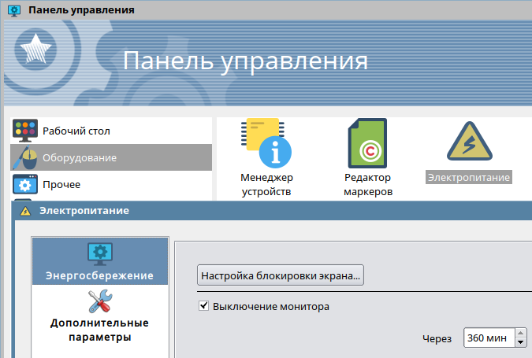

В дистрибутиве Astra Linux 1.6 имеется следующая настройка энергосбережения:
Панель управления
+- Оборудование
+- Электропитание
+- Энергосбережение
+- [Галка] Выключение монитора

Если данная галка включена, то можно установить время, через которое монитор будет выключен (максимальное значение - 360 минут, т. е. 6 часов). Однако для боевого применения Astra Linux 1.6 часто требуется отключить эту галку, чтобы монитор все время работал. Причем отключение галки надо сделать через скрипт, а не вручную тыкать мышкой. Для этого нужно знать, где хранится настройка этого параметра. В документации на Astra Linux такая информация, традиционно, отсутсвует.